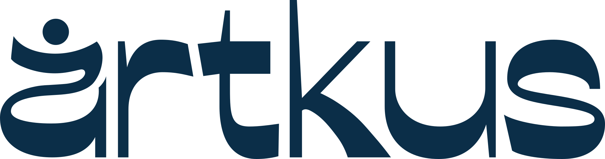
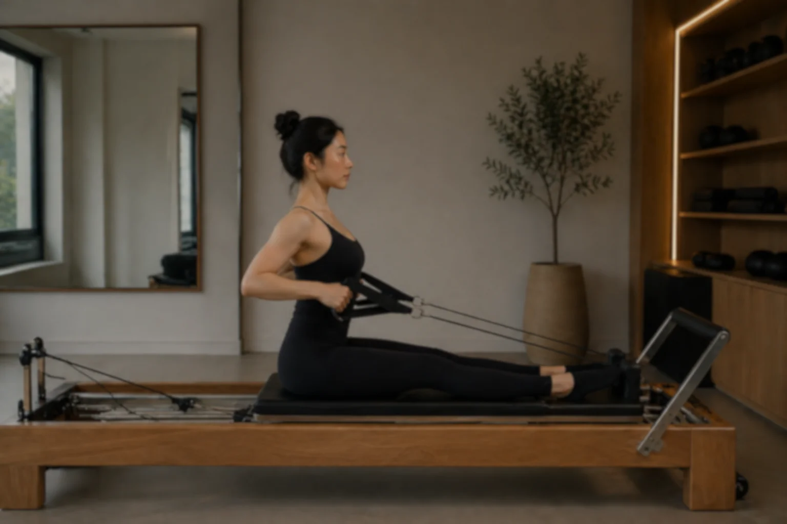

CONSCIÊNCIA E MOVIMENTO
Mais conexão
com o seu corpo.
Um espaço para trabalhar o movimento com atenção, presença e orientação. Na Artkus, o Pilates faz parte de um cuidado que respeita sua individualidade.
Conversar sobre Pilates +
Vamos conversarCUIDADO QUE CONECTA
Um espaço para ouvir o seu corpo e cuidar do que ele precisa, em cada fase da sua vida.
Encontre seu cuidado
Sentir-se bem
começa com cuidado.
A ESSÊNCIA ARTKUS
Cada corpo tem uma história.
Aqui, ela merece ser ouvida.
A Artkus nasceu para reunir, em um só espaço, diferentes formas de cuidar. Fundada pela fisioterapeuta Adriana Carla de França, conecta Pilates, Osteopatia, Fisioterapia e Dermatofuncional com um olhar para a saúde, o movimento e o bem-estar.
Da atenção ao desconforto físico ao cuidado estético, nossa essência é a mesma: acolhimento, conhecimento e respeito à individualidade.
Conheça nossa forma de cuidar +ESPECIALIDADES
Descubra as áreas que se encontram na Artkus.
Selecione uma especialidade para conhecer.
CONSCIÊNCIA E MOVIMENTO
Um espaço para trabalhar o movimento com atenção, presença e orientação. Na Artkus, o Pilates faz parte de um cuidado que respeita sua individualidade.
Conversar sobre Pilates +NOSSA FORMA DE CUIDAR
O ponto de partida é você: sua história, suas necessidades e o que deseja para o seu bem-estar.
Um olhar atento para compreender o que trouxe você até aqui.
Diferentes áreas reunidas para ampliar as possibilidades de cuidado.
Atenção à individualidade, com espaço para conversar e esclarecer dúvidas.
ANTES DE COMEÇAR
Uma conversa pode ser
o seu primeiro passo.
Conte pelo WhatsApp o que você está buscando. A equipe da Artkus poderá esclarecer as opções de atendimento e orientar seu próximo passo.
A Artkus reúne Pilates, Osteopatia, Fisioterapia e Dermatofuncional. Você pode conversar com a equipe para saber mais sobre cada área.
Entre em contato pelo WhatsApp para consultar a disponibilidade, os valores e as informações do atendimento desejado.
Toque em “Falar com a Artkus” e envie sua mensagem. A solicitação será conversada diretamente com a equipe pelo WhatsApp.
SEU PRÓXIMO PASSO
Converse com a Artkus e descubra por onde começar.
Falar com a Artkus(18) 99140-3939